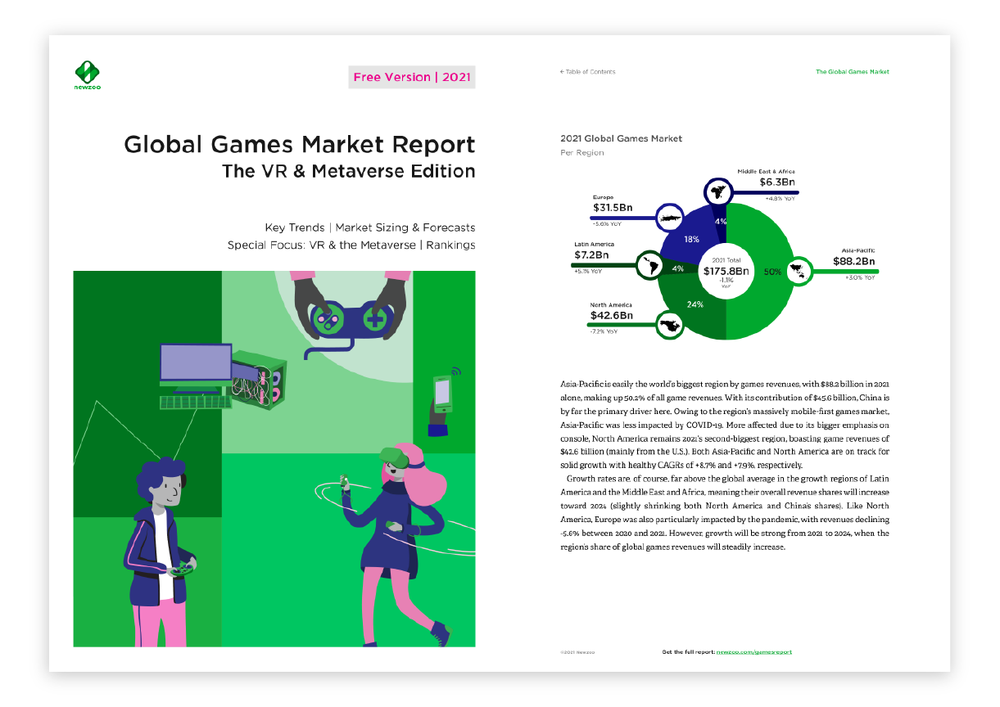
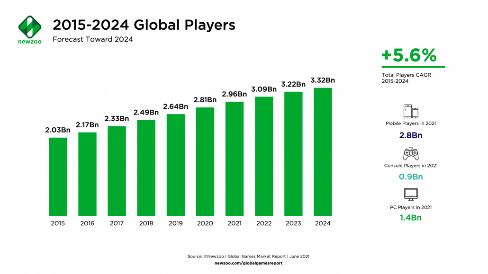
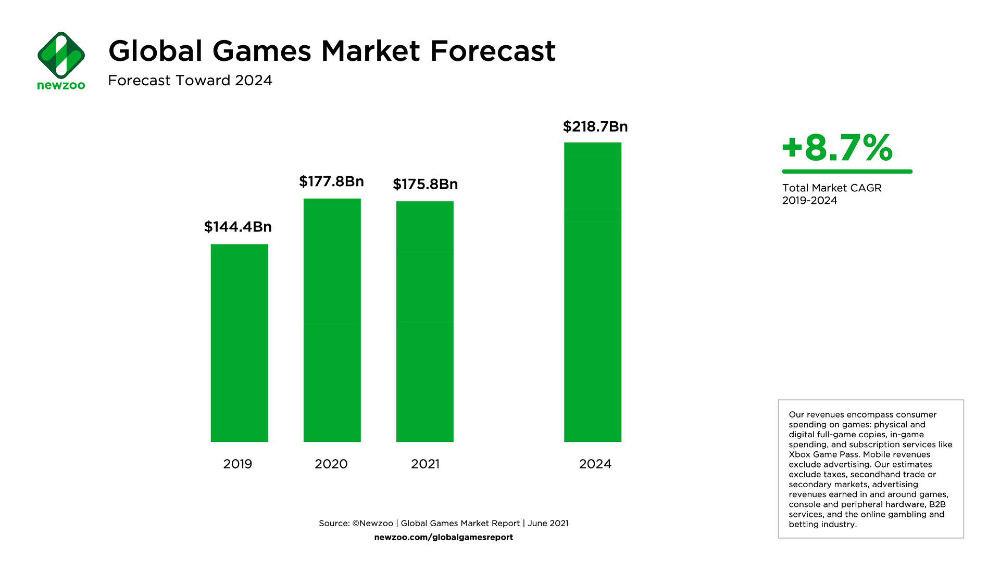

Newzoo：2021年全球游戏玩家数量已超30亿
对于游戏行业来说，2021 是个相当值得纪念的年份。Newzoo 在新发布的全球游戏市场报告中指出： 今年的游戏玩家数量已经迈过了 30 亿的大关，且有望在未来几年迎来持续的增长。报告中强调了游戏行业较以往任何时候都更加健康， 其中有 28 亿在移动设备上玩游戏，且亚洲玩家的数字平台推动力和可访问性都相当之高（PC 14 亿 / 主机 9 亿）。
考虑到许多玩家都是跨平台的多设备用户，上述各项数据显然会有较高的重叠度。不过展望 2024 年，Newzoo 还是预计玩家总数将超过 33 亿。
  